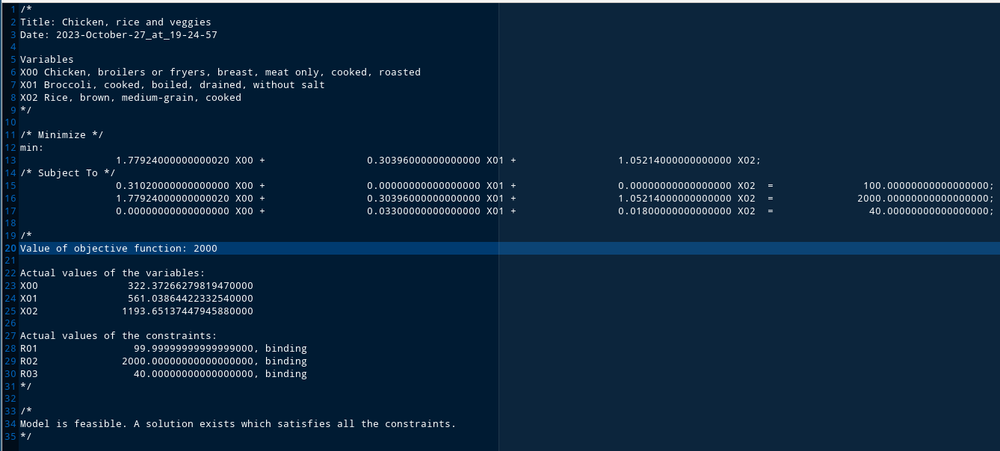

Log¶
There is a linear programming file that is created everytime a user solves the model and it is found on the log directory.
Delete files if not needed
There is also a bash script in the log directory used to solve the models.
The Linear Program Model¶

This is the linear program output generated by Snack that is saved to the log file¶